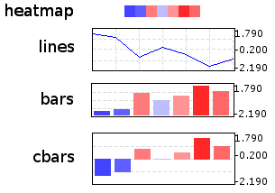

Clustering Trees¶
Contents
Overview¶
Cluster analysis is the assignment of a set of observations into subsets (called clusters) so that observations in the same cluster are similar in some sense. Clustering is a method of unsupervised learning, and a common technique for statistical data analysis used in many fields, including machine learning, data mining, pattern recognition, image analysis and bioinformatics. Hierarchical clustering creates a hierarchy of clusters which may be represented in a tree structure called a dendrogram. The root of the tree consists of a single cluster containing all observations, and the leaves correspond to individual observations. [The Wikipedia project Jun-2009].
ETE provides special ClusterNode (alias ClusterTree)
instances to deal with trees associated to a clustering analysis. The
basic difference between Tree and ClusterTree is
that leaf nodes in a cluster-tree are linked to numerical
profiles. Such profiles are expected to represent the data used to
generate the clustering tree. In other words, trees are bound to
numerical arrays.
# /-A
# ---|
# \-B
#
# #Names col1 col2 col3
# A 1.1 0.1 1.33
# B 2.0 1.0 2.0
Based on this, ClusterTree instances provide several several
clustering validation techniques that help in the analysis of cluster
quality. Currently, inter and intra-cluster distances, cluster
std.deviation, Silhouette analysis and Dunn indexes are supported. In
addition, ClusterTree nodes can be visualized using the
ProfileFace face type, which can represent cluster profiles
in different ways, such as line plots, heatmaps or bar plots.
Although this type of trees are intended to be used for clustering results, any tree that can be linked to a table (i.e. phylogenetic profiles) could be loaded using this data type, thus taking advantage of the profile visualization modes, etc.
Loading ClusterTrees¶
A ClusterTree can be linked to a numerical matrix by using
the text_array argument.
from ete3 import ClusterTree
# Example of a minimalistic numerical matrix. It is encoded as a text
# string for convenience, but it usally be loaded from a text file.
matrix = """
#Names\tcol1\tcol2\tcol3\tcol4\tcol5\tcol6\tcol7
A\t-1.23\t-0.81\t1.79\t0.78\t-0.42\t-0.69\t0.58
B\t-1.76\t-0.94\t1.16\t0.36\t0.41\t-0.35\t1.12
C\t-2.19\t0.13\t0.65\t-0.51\t0.52\t1.04\t0.36
D\t-1.22\t-0.98\t0.79\t-0.76\t-0.29\t1.54\t0.93
E\t-1.47\t-0.83\t0.85\t0.07\t-0.81\t1.53\t0.65
F\t-1.04\t-1.11\t0.87\t-0.14\t-0.80\t1.74\t0.48
G\t-1.57\t-1.17\t1.29\t0.23\t-0.20\t1.17\t0.26
H\t-1.53\t-1.25\t0.59\t-0.30\t0.32\t1.41\t0.77
"""
print "Example numerical matrix"
print matrix
# #Names col1 col2 col3 col4 col5 col6 col7
# A -1.23 -0.81 1.79 0.78 -0.42 -0.69 0.58
# B -1.76 -0.94 1.16 0.36 0.41 -0.35 1.12
# C -2.19 0.13 0.65 -0.51 0.52 1.04 0.36
# D -1.22 -0.98 0.79 -0.76 -0.29 1.54 0.93
# E -1.47 -0.83 0.85 0.07 -0.81 1.53 0.65
# F -1.04 -1.11 0.87 -0.14 -0.80 1.74 0.48
# G -1.57 -1.17 1.29 0.23 -0.20 1.17 0.26
# H -1.53 -1.25 0.59 -0.30 0.32 1.41 0.77
#
#
# We load a tree structure whose leaf nodes correspond to rows in the
# numerical matrix. We use the text_array argument to link the tree
# with numerical matrix.
t = ClusterTree("(((A,B),(C,(D,E))),(F,(G,H)));", text_array=matrix)
Alternatively, you can re-link the tree (or a sub-part of it) to a new
matrix using the ClusterNode.link_to_arraytable() method.
t = ClusterTree("(((A,B),(C,(D,E))),(F,(G,H)));")
t.children[0].link_to_arraytable(matrix1)
t.children[1].link_to_arraytable(matrix2)
Once the tree is linked to a table of profiles, the following node
properties will be available: PhyloNode.profile,
PhyloNode.deviation, PhyloNode.silhoutte,
PhyloNode.intercluster_dist,
PhyloNode.intracluster_dist, PhyloNode.dunn.
Similarly, the following methods are provide for convenience
PhyloNode.iter_leaf_profiles(),
PhyloNode.get_leaf_profiles(), PhyloNode.get_silhouette()
and PhyloNode.get_dunn() methods.
Visualization of matrix associated Trees¶
Clustering or not, any ClusterTree instance, associated to a numerical
matrix, can be visualized together with the graphical representation
of its node’s numeric profiles. To this end, the ProfileFace
class is provided by the treeview module. This face type can
represent a node’s numeric profile in four different ways:

Additionally, three basic layouts are provided that use different styles of ProfileFace instances: heatmap, line_profiles, bar_profiles, cbar_profiles.
# Import Tree instance and faces module
from ete3 import ClusterTree
# Example of a minimalistic numerical matrix. It is encoded as a text
# string for convenience, but it usally be loaded from a text file.
matrix = """
#Names\tcol1\tcol2\tcol3\tcol4\tcol5\tcol6\tcol7
A\t-1.23\t-0.81\t1.79\t0.78\t-0.42\t-0.69\t0.58
B\t-1.76\t-0.94\t1.16\t0.36\t0.41\t-0.35\t1.12
C\t-2.19\t0.13\t0.65\t-0.51\t0.52\t1.04\t0.36
D\t-1.22\t-0.98\t0.79\t-0.76\t-0.29\t1.54\t0.93
E\t-1.47\t-0.83\t0.85\t0.07\t-0.81\t1.53\t0.65
F\t-1.04\t-1.11\t0.87\t-0.14\t-0.80\t1.74\t0.48
G\t-1.57\t-1.17\t1.29\t0.23\t-0.20\t1.17\t0.26
H\t-1.53\t-1.25\t0.59\t-0.30\t0.32\t1.41\t0.77
"""
print "Example numerical matrix"
print matrix
# #Names col1 col2 col3 col4 col5 col6 col7
# A -1.23 -0.81 1.79 0.78 -0.42 -0.69 0.58
# B -1.76 -0.94 1.16 0.36 0.41 -0.35 1.12
# C -2.19 0.13 0.65 -0.51 0.52 1.04 0.36
# D -1.22 -0.98 0.79 -0.76 -0.29 1.54 0.93
# E -1.47 -0.83 0.85 0.07 -0.81 1.53 0.65
# F -1.04 -1.11 0.87 -0.14 -0.80 1.74 0.48
# G -1.57 -1.17 1.29 0.23 -0.20 1.17 0.26
# H -1.53 -1.25 0.59 -0.30 0.32 1.41 0.77
#
#
# We load a tree structure whose leaf nodes correspond to rows in the
# numerical matrix. We use the text_array argument to link the tree
# with numerical matrix.
t = ClusterTree("(((A,B),(C,(D,E))),(F,(G,H)));", text_array=matrix)
t.show("heatmap")
t.show("cluster_cbars")
t.show("cluster_bars")
t.show("cluster_lines")
Cluster Validation Example¶
If associated matrix represents the dataset used to produce a given tree, clustering validation values can be used to assess the quality of partitions. To do so, you will need to set the distance function that was used to calculate distances among items (leaf nodes). ETE implements three common distance methods in bioinformatics : euclidean, pearson correlation and spearman correlation distances.
In the following example, a microarray clustering result is visualized and validated using ETE.
Image resulting from a microarray clustering validation analysis. Red bubbles represent a bad silhouette index (S<0), while green represents good silhouette index (S>0). Size of bubbles is proportional to the Silhouette index. Internal nodes are drawn with the average expression profile grouped by their partitions. Leaf node profiles are shown as a heatmap.
from ete3 import ClusterTree, TreeStyle, AttrFace, ProfileFace, TextFace
from ete3.treeview.faces import add_face_to_node
# To operate with numbers efficiently
import numpy
PATH = "./"
# Loads tree and array
t = ClusterTree(PATH+"diauxic.nw", PATH+"diauxic.array")
# nodes are linked to the array table
array = t.arraytable
# Calculates some stats on the matrix. Needed to establish the color
# gradients.
matrix_dist = [i for r in xrange(len(array.matrix))\
for i in array.matrix[r] if numpy.isfinite(i)]
matrix_max = numpy.max(matrix_dist)
matrix_min = numpy.min(matrix_dist)
matrix_avg = matrix_min+((matrix_max-matrix_min)/2)
# Creates a profile face that will represent node's profile as a
# heatmap
profileFace = ProfileFace(matrix_max, matrix_min, matrix_avg, \
200, 14, "heatmap")
cbarsFace = ProfileFace(matrix_max,matrix_min,matrix_avg,200,70,"cbars")
nameFace = AttrFace("name", fsize=8)
# Creates my own layout function that uses previous faces
def mylayout(node):
# If node is a leaf
if node.is_leaf():
# And a line profile
add_face_to_node(profileFace, node, 0, aligned=True)
node.img_style["size"]=0
add_face_to_node(nameFace, node, 1, aligned=True)
# If node is internal
else:
# If silhouette is good, creates a green bubble
if node.silhouette>0:
validationFace = TextFace("Silh=%0.2f" %node.silhouette,
"Verdana", 10, "#056600")
node.img_style["fgcolor"]="#056600"
# Otherwise, use red bubbles
else:
validationFace = TextFace("Silh=%0.2f" %node.silhouette,
"Verdana", 10, "#940000")
node.img_style["fgcolor"]="#940000"
# Sets node size proportional to the silhouette value.
node.img_style["shape"]="sphere"
if node.silhouette<=1 and node.silhouette>=-1:
node.img_style["size"]= 15+int((abs(node.silhouette)*10)**2)
# If node is very internal, draw also a bar diagram
# with the average expression of the partition
add_face_to_node(validationFace, node, 0)
if len(node)>100:
add_face_to_node(cbarsFace, node, 1)
# Use my layout to visualize the tree
ts = TreeStyle()
ts.layout_fn = mylayout
t.show(tree_style=ts)